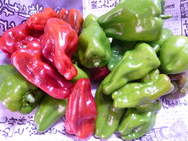
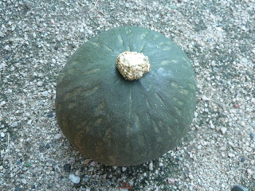

遊びで植物を育てよう
2013/08/10
ミョウガが育っています。
ミョウガの季節ですね。
夏だなー。
【ページTOP】
【8月TOP】
【園芸TOP】
2013/08/17
完熟ピーマンが増殖中。
赤いピーマンは完熟ものです。

ピーマンが沢山出来てて、収穫しなかったものが赤くなりました。
完熟物は栄養があるっていうので、きっといいんでしょうね。
緑と赤で、色合いがいいですね。
赤くなりそうなピーマンは、わざと収獲しないで真っ赤になってから収穫しようと思います。
味的には緑の方が好きかな。
【ページTOP】
【8月TOP】
【園芸TOP】
2013/08/25
カボチャがとれると秋がきた感じしますね。
カボチャを収穫しました。

もうちょっとで夏が終わりますね。
【ページTOP】
【8月TOP】
【園芸TOP】
過去の日記
【2024年8月の日記】
【2023年8月の日記】
【2022年8月の日記】
【2021年8月の日記】
【2020年8月の日記】
【2019年8月の日記】
【2018年8月の日記】
【2017年8月の日記】
【2016年8月の日記】
【2015年8月の日記】
【2014年8月の日記】
【2013年8月の日記】
【2012年8月の日記】
【ページTOP】
【8月TOP】
【園芸TOP】
畑仕事じゃないよ。
【おいしいものを食べよう。】【しっかり寝よう。】
【ソロ活をしよう!】【季節感のあることをしよう。】【動画視聴はほどほどに。】【当サイトの全てのコンテンツは無断転載禁止です。】